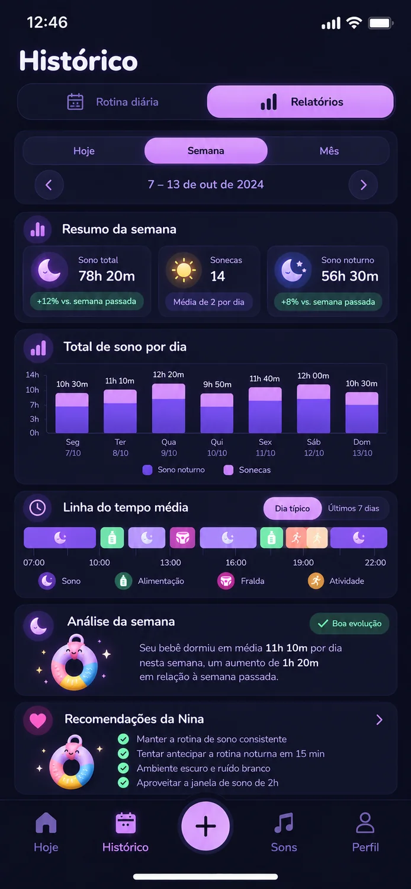
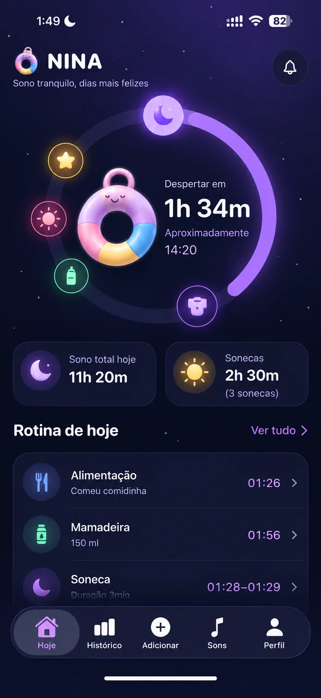
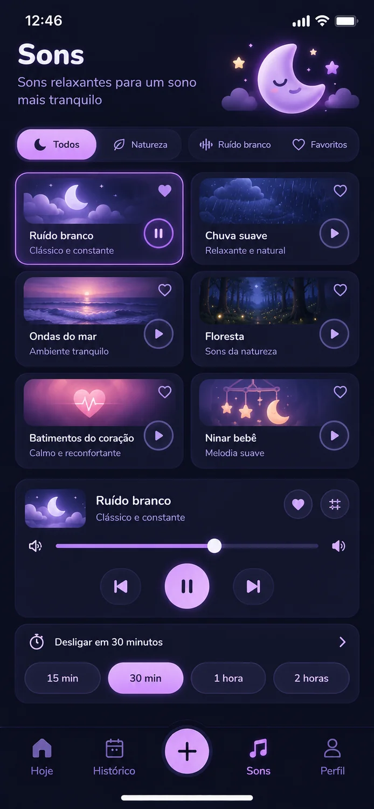

Previsão do próximo soninho
Use as estimativas como referência para planejar o dia.
A Nina é o aplicativo que te ajuda a criar uma rotina de sono saudável para o seu bebê, com previsões personalizadas, registros simples e orientações práticas.
● Baixar na App Store →


Rotinas adaptadasà idade do seu bebê
Menos estressee mais confiança
Tudo em um só lugarpara você e cuidadores
Acompanhe a evoluçãocom relatórios simples
Da previsão do próximo soninho aos relatórios semanais, a Nina reúne ferramentas práticas para ajudar você a observar os padrões do sono do seu bebê e acompanhar a rotina com mais clareza.
Use as estimativas como referência para planejar o dia.
Acompanhe visualmente os registros e padrões da rotina.
Anote sonos e momentos da rotina em poucos toques.
Explore ruído branco e sons ambientes para o momento do sono.
Uma experiência prática para você começar a entender melhor a rotina do seu bebê.
Informe a idade e compartilhe os detalhes necessários para personalizar a experiência.
······→Anote os soninhos e os momentos do dia para manter tudo organizado em um só lugar.
······→Consulte estimativas e relatórios para observar a evolução da rotina ao longo do tempo.
Cada bebê tem seu próprio ritmo. A Nina reúne informações e ferramentas práticas para ajudar você a acompanhar a rotina com mais confiança e acolhimento.
Entenda os registros e observe os padrões do sono.
Consulte informações reunidas em um só lugar.
Use os registros como apoio para acompanhar a rotina.
Uma experiência pensada para bebês de 2 a 36 meses.
Uma ferramenta para observar, registrar e entender os momentos do dia.
Os registros e estimativas da Nina são referências para apoiar você — respeitando as necessidades individuais de cada criança.
Algumas respostas para conhecer melhor a Nina.
A Nina foi pensada para famílias com bebês de 2 a 36 meses. Considere as informações do aplicativo de acordo com a fase e as necessidades individuais do seu bebê.
Não. Cada bebê é único e o sono varia por diversos motivos. A Nina ajuda a registrar informações e observar padrões, mas não garante resultados específicos.
Não. A Nina é uma ferramenta de apoio à organização da rotina e não oferece diagnóstico nem substitui a orientação de pediatras ou outros profissionais de saúde.
A Nina oferece planos de assinatura mensal e anual processados pela Apple App Store. As condições, a cobrança e a renovação são apresentadas no fluxo de compra do aplicativo. O teste gratuito de três dias está sujeito às condições exibidas na App Store.
As assinaturas compradas pela App Store podem ser gerenciadas nas configurações de assinatura da sua conta Apple. O cancelamento segue as regras e os prazos da Apple.
Envie uma solicitação para ninahubbrazil@gmail.com. A equipe verificará o pedido e responderá sobre os próximos passos.
Conheça a Nina e comece a acompanhar a rotina do seu bebê.
● Baixar na App Store →As informações do app são apoio à rotina e não substituem orientação profissional.